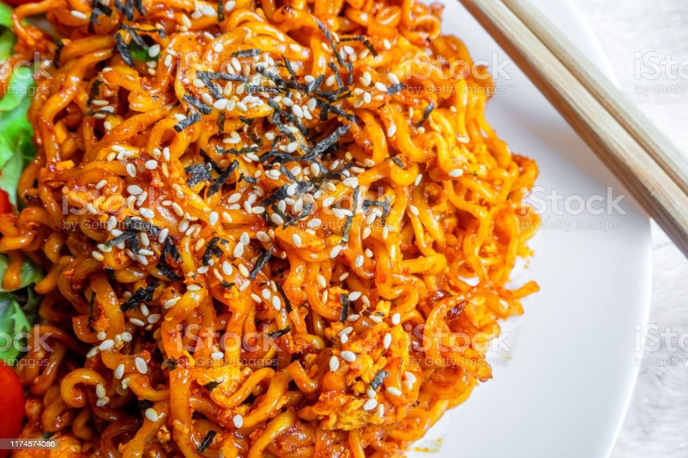

Spicy Noodles

Description
Korean Spicy Noodles are a quick ramen snack from the Buldak company.
Ingredients
- water
- ramen
- seaweed
- sesame seeds
- spicy sauce
Steps
- First, you need to measure about 4-5 cups of water and pour it into your pot.
- Second, boil the pot of water until bubbling.
- Next, put your block of ramen into the boiling water.
- Immediately, turn down heat to low-medium and close lid for about 3 minutes.
- After 3 minutes, turn off heat and strain out as much water as possible.
- Next, pour your noodles into a bowl and add your seaweed, sesame seeds, and spicy sauce to your noodles.
- Mix the ingredients well and enjoy! (Always feel free to add your own touches, like eggs, meat, etc.)